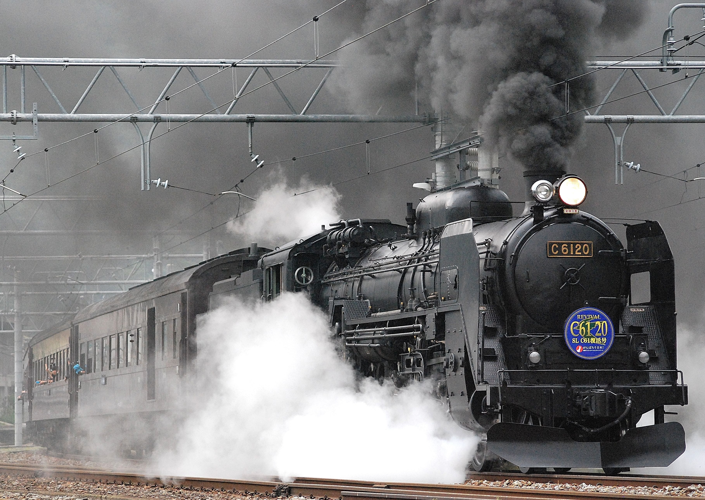

WORLD TRAVEL
TRAIN TRAVEL

Early history
Trains are an evolution of wheeled wagons running on stone wagonways, the earliest of which were built by Babylon circa 2,200 BCE.[2] Starting in the 1500s, wagonways were introduced to haul material from mines; from the 1790s, stronger iron rails were introduced.[2] Following early developments in the second half of the 1700s, in 1804 a steam locomotive built by British inventor Richard Trevithick powered the first ever steam train.[3] Outside of coal mines, where fuel was readily available, steam locomotives remained untried until the opening of the Stockton and Darlington Railway in 1825. British engineer George Stephenson ran a steam locomotive named Locomotion No. 1 on this 40-kilometer (25-mile) long line, hauling over 400 passengers at up to 13 kilometers per hour (8 mph). The success of this locomotive, and Stephenson's Rocket in 1829, convinced many of the value in steam locomotives, and within a decade the stock market bubble known as "Railway Mania" started across the United Kingdom.[4]
News of the success of steam locomotives quickly reached the United States, where the first steam railroad opened in 1829.[5] American railroad pioneers soon started manufacturing their own locomotives, designed to handle the sharper curves and rougher track typical of the country's railroads.[6]
The Union Pacific Big Boy locomotives represented the pinnacle of steam locomotive technology and power
The other nations of Europe also took note of British railroad developments, and most countries on the continent constructed and opened their first railroads in the 1830s and 1840s, following the first run of a steam train in France in late 1829.[7] In the 1850s, trains continued to expand across Europe, with many influenced by or purchases of American locomotive designs.[7] Other European countries pursued their own distinct designs. Around the world, steam locomotives grew larger and more powerful throughout the rest of the century as technology advanced.[8]
Trains first entered service in South America, Africa, and Asia through construction by imperial powers, which starting in the 1840s built railroads to solidify control of their colonies and transport cargo for export.[9] In Japan, which was never colonized, railroads first arrived in the early 1870s. By 1900, railroads were operating on every continent besides uninhabited Antarctica.
New technologies
Even as steam locomotive technology continued to improve, inventors in Germany started work on alternative methods for powering trains. Werner von Siemens built the first train powered by electricity in 1879, and went on to pioneer electric trams.[8] Another German inventor, Rudolf Diesel, constructed the first diesel engine in the 1890s, though the potential of his invention to power trains was not realized until decades later.[8] Between 1897 and 1903, tests of experimental electric locomotives on the Royal Prussian Military Railway in Germany demonstrated they were viable, setting speed records in excess of 160 kilometers per hour (100 mph).[11]
The EMD FT set the stage for diesel locomotives to take over from steam.
Early gas powered "doodlebug" self-propelled railcars entered service on railroads in the first decade of the 1900s.[12] Experimentation with diesel and gas power continued, culminating in the German "Flying Hamburger" in 1933, and the influential American EMD FT in 1939.[13] These successful diesel locomotives showed that diesel power was superior to steam, due to lower costs, ease of maintenance, and better reliability.[14] Meanwhile, Italy developed an extensive network of electric trains during the first decades of the 20th century, driven by that country's lack of significant coal reserves.
To the present day
Towards the end of the 20th century, increased awareness of the benefits of trains for transport led to a revival in their use and importance. Freight trains are significantly more efficient than trucks, while also emitting far fewer greenhouse gas emissions per ton-mile; passenger trains are also far more energy efficient than other modes of transport. According to the International Energy Agency, "On average, rail requires 12 times less energy and emits 7-11 times less GHGs per passenger-km travelled than private vehicles and airplanes, making it the most efficient mode of motorised passenger transport. Aside from shipping, freight rail is the most energy-efficient and least carbon-intensive way to transport goods."[22] As such, rail transport is considered an important part of achieving sustainable energy.[23] Intermodal freight trains, carrying double-stack shipping containers, have since the 1970s generated significant business for railroads and gained market share from trucks.[24] Increased use of commuter rail has also been promoted as a means of fighting traffic congestion on highways in urban areas.
AIR TRAVEL

Air travel is a form of travel in vehicles such as airplanes, jet aircraft, helicopters, hot air balloons, blimps, gliders, hang gliders, parachutes, or anything else that can sustain flight.[1] Use of air travel has greatly increased in recent decades – worldwide it doubled between the mid-1980s and the year 2000.[2] Modern air travel is much safer than road travel.
Domestic and international flights
Air travel can be separated into two general classifications: national/domestic and international flights. Flights from one point to another within the same country are called domestic flights. Flights from a point in one country to a point within a different country are known as international flights. Travelers can use domestic or international flights in either private or public travel.
Commercial air travel
Travel class on an airplane is usually split into a two, three or four class model service. U.S. domestic flights usually have two classes: economy class and a domestic first class partitioned into cabins. International flights may have up to four classes: economy class; premium economy; business class or club class; and first class.
Most air travel starts and ends at a commercial airport. The typical procedure is check-in; border control; airport security baggage and passenger check before entering the gate; boarding; flying; and pick-up of luggage and – limited to international flights – another border control at the host country's border.
For longer journeys, air travel may consist of several flights with a layover in between. The number of layovers often depends on the number of hub airports the journey is routed through.
Airlines rely either on the point-to-point model or the spoke-and-hub model to operate flights in between airports. The point-to-point model, often used by low-cost carriers such as Southwest,[3] relies on scheduling flights directly between destination airports. The spoke-and-hub model, used by carriers such as American[4] and Delta,[5] relies on scheduling flights to and from hub airports. The hub-and-spoke model allows airlines to connect more destinations and provide more frequent routes, while the point-to-point system allows airlines to avoid layovers and have more cost effective operations.[6]
Environmental effects
Part of a series on Pollution Air pollution3.jpg Air pollution Biological pollution Electromagnetic pollution Natural pollution Noise pollution Radiation pollution
Soil pollution Solid waste pollution Space pollution Thermal pollution Visual pollution War pollution Water pollution
Misc Aegopodium podagraria1 ies.jpg Environment portalEarth Day Flag.png Ecology portal vte
Main article: Environmental impact of aviation
Modern aircraft consume less fuel per person and mile travelled than cars when fully booked.[7] This argument in favor of air travel is counterweighted by two facts:
The distances travelled are often significantly larger and will not replace car travel but instead add to it, and
Not every flight is booked out.
Instead, the scheduled flights are predominant, resulting in a far worse fuel efficiency.[8][9][10] According to the ATAG, flights produced 781 million tonnes (769 million long tons) of the greenhouse gas CO2 in 2015 globally, as compared to an estimated total of 36 billion tonnes (35 billion long tons) anthropogenic CO2.[11] Carbon offset is often proposed as solution to mitigate the CO2 emissions of flying. There are many NGOs that offer to compensate CO2 emissions by advancing clean renewable energy, reducing energy consumption and capturing already released carbon in trees or other plants.[12] However, carbon offsetting is a very controversial topic as it only tries to mitigate what has already been emitted.
BOAT TRAVEL
My love affair with traveling by boat
I’ve taken boats up the Nile, down the Mekong, across Japan, Korea, and China, from Ireland and France and I can’t get enough of them. I hold the experiences very close to my heart. Why exactly? For a start, I once hitched on a cargo ship to enter Yemen, the 196th and second last country on the planet I had to visit (on my journey to every country in the world).
And then there’s the Mekong hitch-hiking story, illegally entering Myanmar and Laos and spending 7 days as a Chinese Sailor! And of course rowing across the Atlantic!
Here are the 5 reasons why I think traveling by boats beats any other mode of transport, no contest:
Space
With your knees jammed somewhere up around your chin in another cross-country bus, you truly begin to appreciate the luxury of space that boats can afford. In fact, I revel in it so much that I often run to the center of the deck and burst into spontaneous starjumps simply because I can. Seriously, you can walk around at your leisure, even sometimes order food and drinks, and spread out and sleep if you really need to.
Leisurely pace
Some may argue that this is a negative aspect but I beg to differ. Boats are not lightning fast, far from it but this is another aspect I enjoy. You meander across an ocean or down a river at a leisurely pace, giving you time to genuinely appreciate the journey that you’re on. You can plan your next steps with all the free time you find yourself with and kick back, read a book and sanctimoniously think of all the people around the world darting to and fro in their fast-paced jobs while you, unhurriedly, enjoy the rolling of the water.
Cheap
This certainly applies to the boats that I take although I fully appreciate this isn’t always the case. As a budget traveler, luxury yachts and cruise-ships aren’t my haunt at all but cargo boats, slow ferries, feluccas etc certainly don’t burst any tight budgets. If you choose wisely and are in no rush, boats can be the cheapest mode of transport. You don’t (can’t) spend too much money while you’re onboard, the tickets often include accommodation and food, you can bring your own booze and snacks on board – all in all, a bargain mode of transport.